G.A.M.E. 수업 흐름
게임을 하는 데서 끝내지 않고, 게임에서 겪은 일을 교과의 배움으로 옮기는 네 단계입니다. 프로젝트마다 이 흐름을 한 번씩 돕니다.
게임으로 경험하고 선택합니다. 구성물과 규칙에서 배울 거리를 찾습니다.
겪은 일에서 질문을 만들고 조사합니다. 친구의 글에 질문을 달고 답합니다.
게임과 실제 세계를 견줍니다. 게임 속 모습을 그대로 믿지 않도록 확인합니다.
달라진 생각을 선택과 행동으로 옮겨 약속을 남깁니다.
P.A.C.T. 세 프로젝트
pact는 약속이라는 뜻입니다. 프로젝트마다 학생들이 세계와 맺는 약속 하나를 산출물로 남깁니다. 전체 38차시 가운데 28차시가 사회 시간입니다.
다름을 이해하다
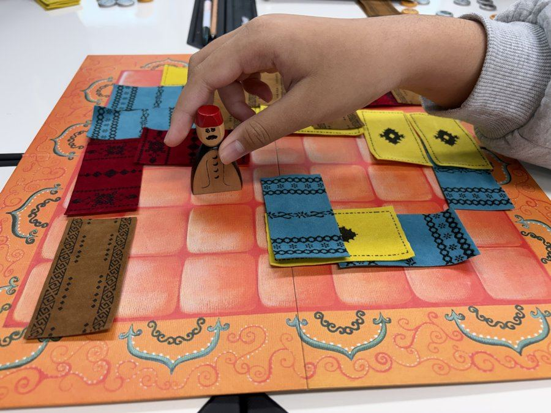
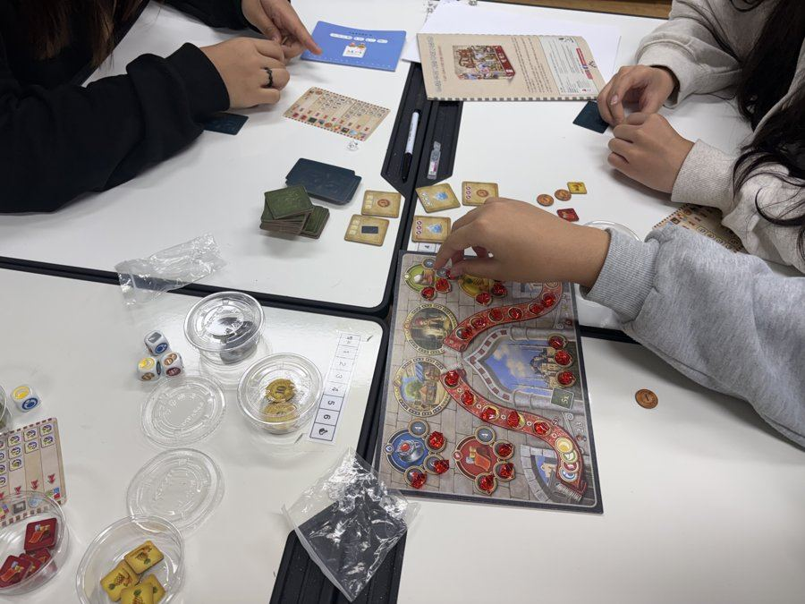
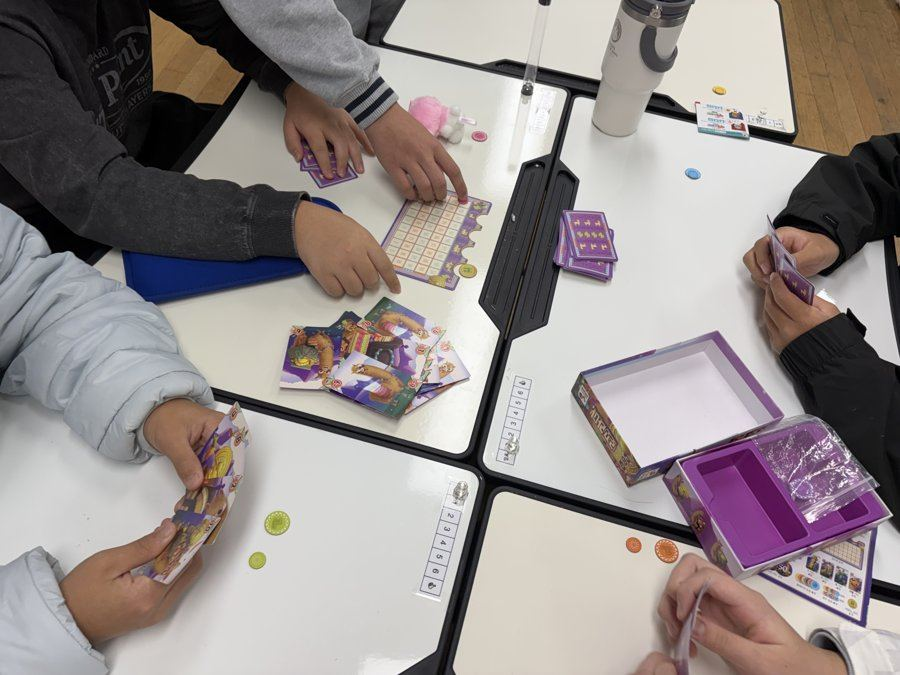
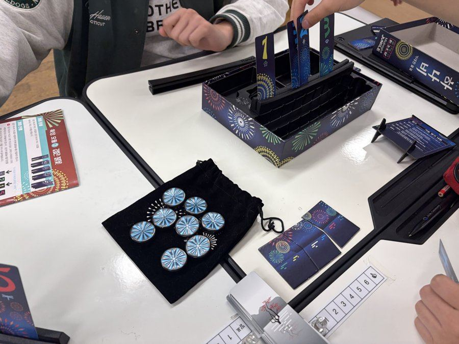
| 단계 | 차시 | 학생 활동 |
|---|---|---|
| G | 1~6 | 게임 익히기와 하기. 구성물에서 그 지역의 문화를 한 사람이 하나씩 찾기 |
| A | 7~9 | 찾은 것을 조사해 게시판에 올리고, 친구 글에 질문하고 답하기 |
| M | 10~11 | 게임과 실제를 견주고 우리나라와 비교하기. 다른 까닭을 위치와 기후에서 찾기 |
| E | 12~13 | 탐구 카드를 만들어 세계지도에 붙이고 이어 탐구 지도 완성하기 |
"일본 사람들한테는 유카타가 편안옷 아님니까?"친구의 조사 글에 학생이 단 질문. 우리 기준으로 보던 눈이 그 문화 안의 사람의 눈으로 옮겨 간 장면입니다.
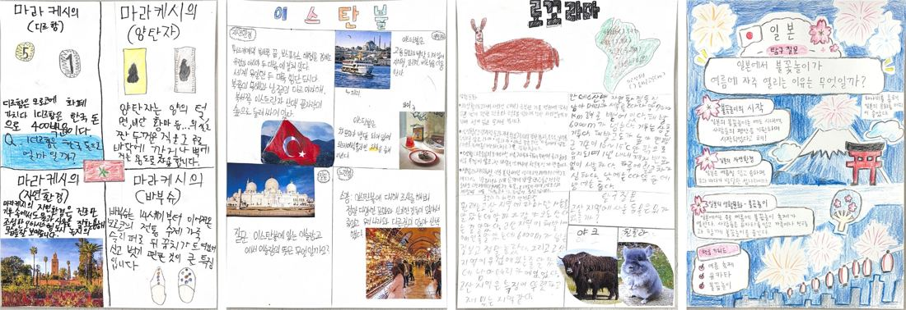
연결을 이해하다
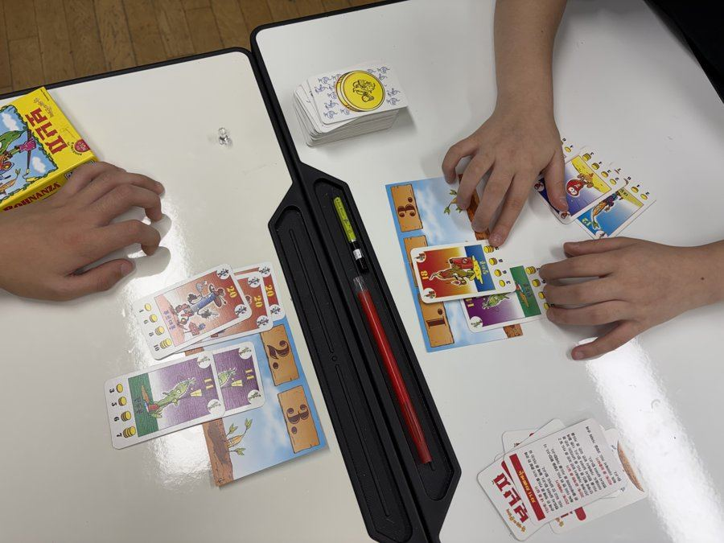
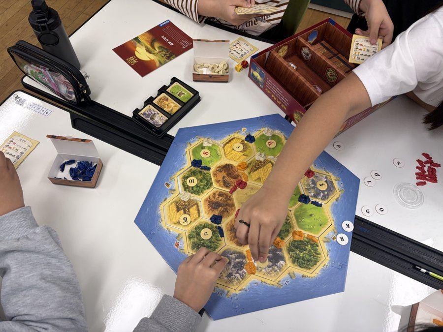
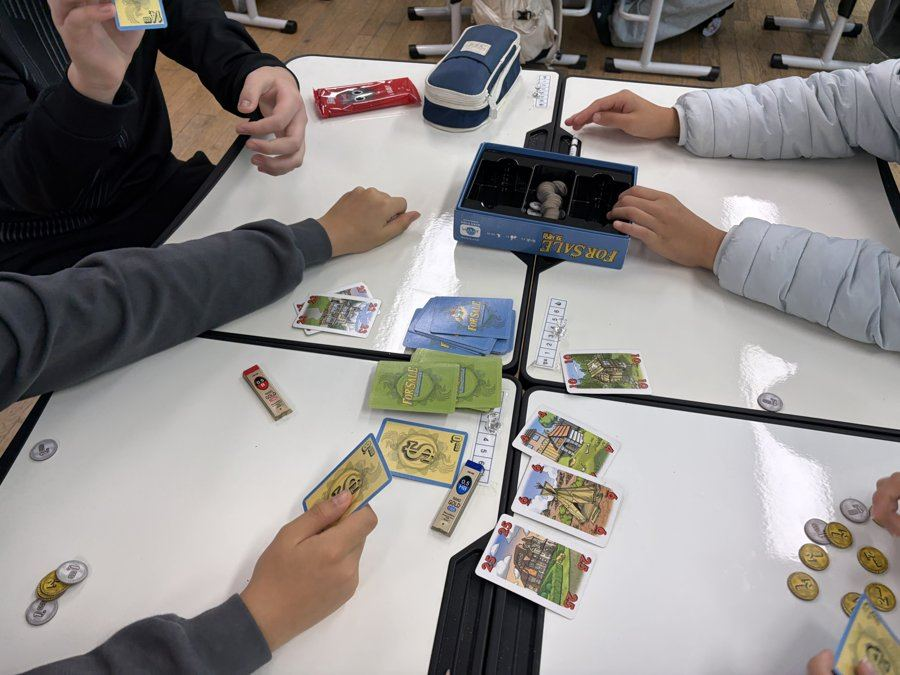
| 단계 | 차시 | 학생 활동 |
|---|---|---|
| G | 1~4 | 게임 익히기와 하기. 직접 생산하고 사고팔고 교환하기 |
| A | 5~7 | 게임 경험을 자원의 한정, 가계와 기업, 무역의 개념으로 정리하기 |
| M | 8~9 | 자원이 한정된 상황에서의 선택 토론하기. 게임 속 교환을 무역과 견주기 |
| E | 10~11 | 전체 회의, 모둠별 조항 작성, 하나의 학급 협약서로 합치기, 성찰 |
"자원이 어떤 사람은 많고 어떤 사람은 적으니 힘들었다. 그때 다른 사람과 협상을 하니 자원 문제가 없어졌다"카탄을 한 뒤 학생이 쓴 후기
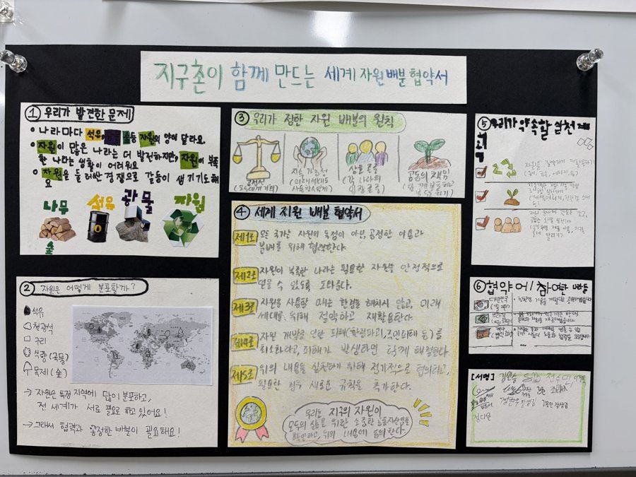
협약서의 짜임
- 우리가 발견한 문제
- 자원은 어떻게 분포할까 (세계지도에 표시)
- 우리가 정한 원칙: 공정성, 지속 가능성, 상호 존중, 공동의 책임
- 조항 쓰기
- 우리가 약속할 실천
- 나라를 하나씩 맡아 서명
성찰 질문
- 우리 모둠은 어떤 기준으로 자원을 나누기로 했나요?
- 다른 나라의 입장을 듣고 생각이 달라진 부분이 있나요?
- 우리 협약이 실제로 적용된다면 어떤 문제가 생길 수 있을까요?
책임 있게 행동하다
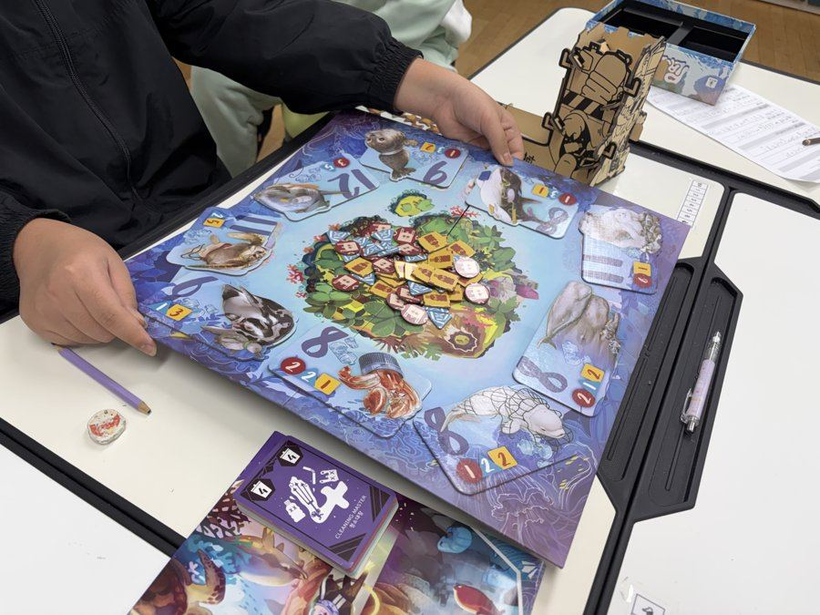
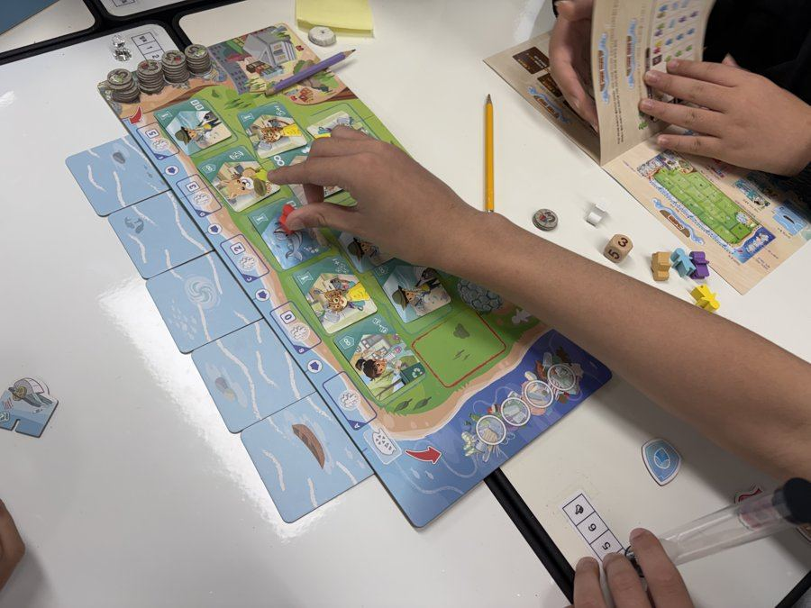
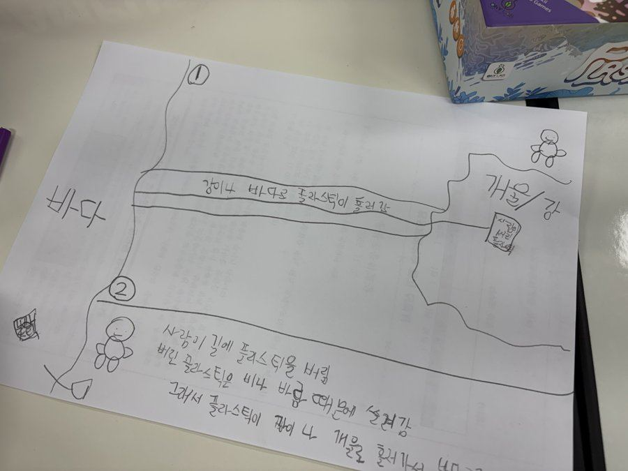
| 단계 | 차시 | 학생 활동 |
|---|---|---|
| G | 1~3 | 협력 게임 익히기와 하기. 게임을 분석하고 규칙을 바꾸어 보며 까닭 설명하기 |
| A | 4~7 | 플라스틱의 이동 경로, 피해 지역, 실제 사례 기사 조사하기. 네 유형 질문 만들기 |
| M | 8~12 | 게임 카드로 이야기 이어 쓰기. 지구촌 플라스틱 정상회의(생산국, 기업, 환경 단체, 피해 지역) |
| E | 13~14 | 포스터를 만들어 교실 분리배출함 위에 붙이기 |
"세계 플라스틱의 날이나 식목일 같은 환경과 관련된 날이 추가되면 좋겠다."환경 토론 뒤 학생이 쓴 후기. 개인의 실천을 넘어 제도를 제안했습니다.
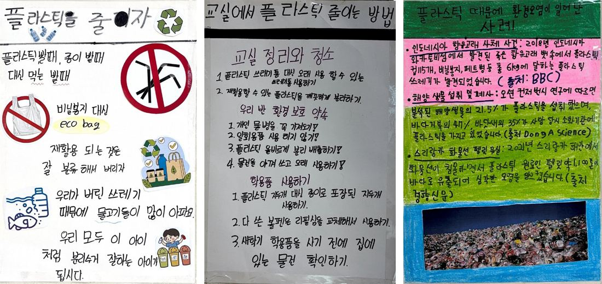
네 가지 질문 틀
질문을 만들어 본 적이 없는 학생에게는 재료와 틀을 함께 줍니다. 재료는 게임에서 겪은 일이고, 틀은 아래 네 가지입니다. 아래 보기는 환경 프로젝트에서 한 모둠이 스스로 만든 질문입니다.
찾으면 답을 알 수 있는 질문
"해양오염을 막기 위해 우리는 무엇을 할 수 있나요?"까닭과 관계를 묻는 질문
"쓰레기를 길에 버리는 게 환경과 무슨 관계과 있을까?"생각이 다를 수 있는 질문
"캠패인,쓰레기줍기,다회용 사용하기 등 에서 어떤 행동이 가장 타당할까요?"나를 돌아보는 질문
"고통받는 바다동물들을 보고 난 무엇을 느끼고 배웠나요?"보드게임 꼬마 선생님
보드게임 수업의 걸림돌은 규칙 설명에 드는 시간과, 규칙을 이해하지 못한 학생이 게임에서 밀려나는 일입니다. 게임마다 두세 명을 꼬마 선생님으로 정하면 둘 다 줄어듭니다.
- 먼저 해 보기 맡은 게임을 수업 전에 미리 연구합니다.
- 쉬운 규칙 쓰기 설명서를 친구가 알기 쉬운 말로 다시 씁니다.
- 친구 돕기 규칙을 설명하고 어려워하는 친구를 돕습니다.
"주사위를 던져 루비 6개를 먼저 모으는 게임"꼬마 선생님이 이스탄불 주사위 게임을 한 문장으로 줄인 것
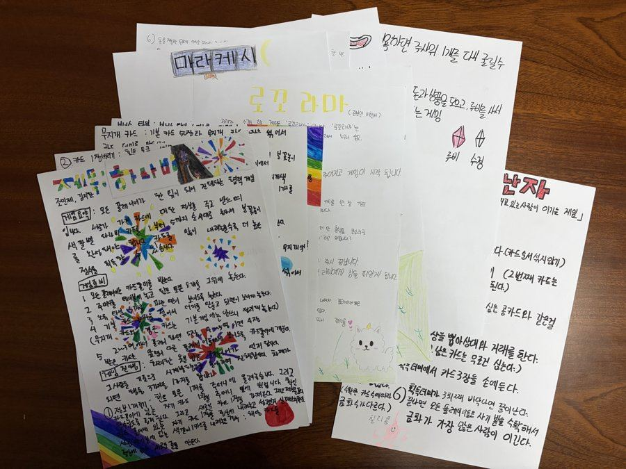
우리 반에 쓰기
전부를 그대로 할 필요는 없습니다. 여건에 맞춰 일부부터 시작할 수 있습니다.
| 여건 | 적용 방안 |
|---|---|
| 시수가 부족한 학급 | 프로젝트마다 게임 하나만 골라 G, A, M, E를 한 번 돌립니다. |
| 학생 수가 많은 학급 | 모둠별로 다른 게임을 하고 서로 소개합니다. |
| 규칙이 어려운 게임 | 꼬마 선생님이 쉬운 규칙 안내를 만들고 모둠마다 배치합니다. |
| 경험이 적은 학급 | '구성물에서 문화 찾기'로 시작하고 조사 항목을 틀로 줍니다. |
다른 학년에서
| 학년 | 성취기준 | 보드게임과 적용 |
|---|---|---|
| 3~4 | [4사03-02] 다른 문화를 존중하는 태도 | 하나비, 마라케시: 구성물 찾기에서 한 가지 조사로 |
| 3~4 | [4사07-01] 희소성과 합리적 선택 | 포세일: 무엇을 살지 선택하고 까닭 말하기 |
| 3~4 | [4사07-02] 생산·소비와 상호의존 | 보난자: 교환 경험에서 지역 간 교류로 |
| 3~4 | [4사09-01] 생활 주변의 문제 해결 | 푸른 바다 지킴이에서 우리 학교의 쓰레기 문제로 |
| 5 | [6사02-01] 기후변화와 자연재해 | 환경 게임에서 우리나라의 기후변화 사례로 |
학생 탐구 게시판
게임마다 학생들이 조사한 내용과 서로 주고받은 질문을 볼 수 있습니다. 학생의 이름은 보이지 않게 해 두었습니다.